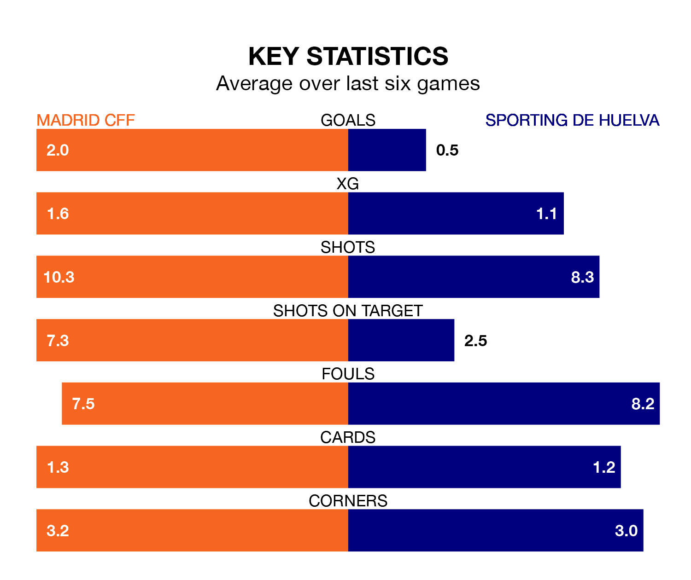

Relegation candidates Sporting de Huelva face a challenge away against high-flying Madrid CFF at the Estadio Fernando Torres on Sunday.
Sporting de Huelva are rooted to the bottom of the Liga F table, and have picked up just one win and two draws in their 20 games to date.
Madrid CFF, meanwhile, are fourth in the standings with 39 points, having won 12 and drawn three, and are 19 points behind table-toppers Barcelona Women.
Madrid CFF are in mixed form in Liga F, with two wins and three draws from their last six games.
With no wins and a draw over that period, Sporting's form is much worse – they have taken one point from 18, compared to the hosts' nine.
With 12 goals in 20 games so far this season, the away team are the league's lowest scorers with 0.6 goals per game. And they are conceding more than average, letting in 43 goals at a rate of 2.1 per game.
Madrid CFF, meanwhile, are above average scorers, with 2.4 goals per game, compared to a league average of 1.5. They have conceded 1.6 goals per game.
In the last 10 years, Madrid CFF and Sporting have played each other on 12 occasions. Madrid CFF won seven of them and Sporting five.
On average, Madrid CFF scored 1.4 goals and Sporting 1.3 in those matches.
Their last meeting was on October 15, when Madrid CFF won 3-1 away.
In Racheal Kundanaji, Madrid CFF have one of the league's most on-form strikers so far this season. She has notched eight goals in 14 appearances, to sit sixth in the scoring charts.
Her goal rate of one every 135 minutes is much quicker than that of Laia Balleste, Sporting's top scorer with a goal every 481 minutes, and a total of three goals in 18 games.
Madrid CFF's last match was on March 16, a 4-1 win against Villarreal Women, with Giovana Queiroz (three) and Ana González Rosa getting the goals for Madrid CFF.
Sporting drew 1-1 with Levante Women last time out, also on March 16, with Miku Ito on the scoresheet.
Updated: 10:19 (UTC), 22/03/24